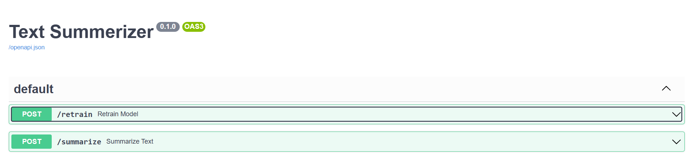

Overview
This project is a full-scale text summarization system with MLOps integration. It summarizes conversational texts using a PEGASUS model fine-tuned on the SAMSum dataset—ideal for chat, email, or customer support automation.
It demonstrates the full ML lifecycle: from experimentation and training to deployment using FastAPI, Docker, GitHub Actions, and AWS infrastructure.
My Role & Contributions
- Problem Definition & Dataset Curation:
- Selected SAMSum dataset for conversation summarization use case.
- Defined input/output schema for model training.
- Model Development:
- Fine-tuned PEGASUS via Hugging Face Transformers.
- Handled preprocessing, tokenization, and post-processing logic.
- Evaluated model using ROUGE scores.
- Pipeline Design (MLOps):
- Built modular training/inference pipelines using clean architecture.
- Used
config.yamlandparams.yamlfor full pipeline control. - Applied version control to datasets, models, and configurations.
- Deployment Engineering:
- Dockerized the FastAPI-based application.
- Deployed to EC2 via GitHub Actions and AWS ECR.
- Implemented CI/CD with secure secrets handling.
- Monitoring & Logging:
- Added structured logging for observability and debugging.
Tech Stack
Python
FastAPI
Docker
AWS EC2
AWS ECR
Transformers
Tokenizers
GitHub Actions
Jupyter
Matplotlib
Implementation Details
-
Modular Code Architecture: The
src/text_summarizer/directory includes:components/: Data loader, model trainer, inference engine.pipeline/: Manages ML flow orchestration.entity/&config/: Cleanly separates logic and configuration.
-
Configurable Pipeline: Behavior is managed entirely through
config.yamlandparams.yamlfor flexibility and reproducibility. -
Training:
- Used PEGASUS tokenizer from Hugging Face.
- Included early stopping and validation evaluation.
- Computed ROUGE metrics post-training.
-
FastAPI Inference Server:
The
app.pyexposes a/predictendpoint:{ "text": "Hi John, how are you doing today?" }Returns an abstractive summary in JSON.
-
Docker & CI/CD:
- All dependencies handled in
Dockerfile. - CI/CD using GitHub Actions and AWS ECR.
- EC2 (Ubuntu) instance fetches and runs updated containers.
- Secrets stored securely via GitHub secrets.
- All dependencies handled in


Results & Impact
- ROUGE-1 F1 score ~45: Demonstrates strong semantic overlap with human summaries.
- Context-aware, dialogue-optimized summaries—outperforming generic summarizers.
- Reduced text length by 60–70% while preserving key messages.
- MLOps automation cut deployment time from hours to under 5 minutes.
- System is production-ready and scalable via EC2, ECS, or Kubernetes.